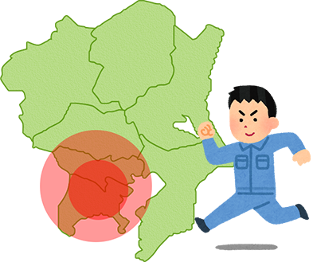

| 土地に関する登記 | 建物に関する登記 | 各種測量 |
|---|---|---|
| 土地分筆登記 土地地目変更登記 土地合筆登記 土地表題登記 土地地積更正登記 地図訂正申出 ほか |
建物表題登記 建物表題部変更登記 建物滅失登記 建物分割登記 建物合体登記 建物区分登記 ほか |
確定測量 現況測量 高低測量 |

- お隣との境界をハッキリさせたい。
- お隣と境界について立会をして互いに確認をする必要があります。境界標（コンクリート杭や金属鋲等）が無い場合は境界標を設置致します。
- お隣の工事で境界杭が無くなってしまったけど、勝手に入れていいの？
- 境界杭の位置は非常に重要になります。トラブルの原因となりますので個人間で境界を埋設することは危険です。
- 資料を調査し測量をして境界の位置の確認を致します。境界線と思われるブロック塀の位置が誤っている事もありますので詳しい調査測量が必要です。
- 農地転用の許可または届出を受ける必要があります。その証明書を用いて『地目変更登記』を申請致します。
- 増築後、１ヵ月以内に『建物表題部変更登記』を申請する必要があります。
あああ
- 相続人から『建物滅失登記』を申請することになります。戸籍等の相続証明書が必要になりますのでご準備いただければと思います。

横浜市、川崎市、大和市、海老名市を中心とした神奈川県全域 (東京都、山梨県などの対応も可能です)

| 事務所名 | 土地家屋調査士すみや事務所 |
|---|---|
| 所在地 | 〒241-0005 横浜市旭区白根１丁目６－２７－３ |
| TEL/FAX | 【電話】045-442-7418【FAX】045-442-7419 【Mail】sumiya@chousashi.plamail.jp 【URL】http://www.sumiya-touki.jp/ 【電話受付時間】9：00～18：00 ※メールでのお問い合わせは24時間お受付可能です |
| 代表者 | 【代表者】住谷和典 神奈川 第2680号 民間紛争解決手続代理関係業務認定 認定番号 第202024号 |
| 所属 | 【所属】神奈川県 横浜東支部 |
鶴ヶ峰駅北口から徒歩１０分 ※基本的に当方がお伺い致しますので、お越し頂く必要はありません。
Copyright © 土地家屋調査士 すみや事務所 All Rights Reserved.

弊所にご興味をお持ちいただきありがとうございます。 いただいたお問い合わせ内容は、弊所の掲げる個人情報保護方針に沿って管理し、お客様の同意なく第三者に開示・提供することはございません。
Copyright © 土地家屋調査士 すみや事務所 All Rights Reserved.